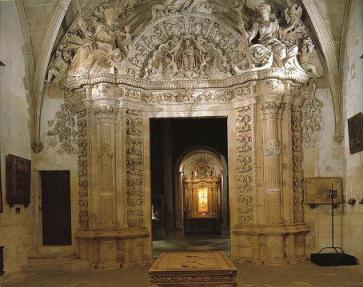

|
|
||
|
|
|||
|
Sala Capitular Barroca. |
|||
| Tanto la sala capitular como
la portada de ingreso son obras realizadas en torno a 1800, en estilo
barroco. Su ingreso, abierto en la sala capitular gótica, es abocinado y
dispuesto entre órdenes clásicos, con un tímpano semicircular de exiguas
proporciones. Pilastras, dintel y tímpano se recubren con ornato vegetal
del tipo de hoja de acanto. En los extremos esta hoja se transforma en
tallos de vid, en caída vertical o helicoidal, de los que penden
pámpanos y racimos. En el tímpano La Virgen con el Niño, entronizada sobre un trono angélico, se recorta contra una venera rodeada de ángeles y acompañada de delfines. La historiografía romántica no dejó de percibir las contaminaciones de la Virgen con Venus. El tímpano está coronado por enormes alegorías de Las tres virtudes teologales: la Caridad en el centro y rodeándola la Fe y la Esperanza. Ha sido restaurada en el año 2001. Esta suntuosa portada, de proporciones algo achatadas, es la preparación para acceder a la sala capitular que es de planta elíptica., constituyendo la primera manifestación creada en Mallorca de éste tipo, de origen italiano. La figura de Francisco Herrera se perfila como autor. Pese a sus exiguas proporciones, el espacio es dinámico y el pavimento acompaña y subraya la tensión derivada de la elipse. El eje mayor se sitúa en la puerta. La cubierta es una cúpula ochavada con ocho nervios, que a la vez articulan el muro, separados por un fuste semicilíndrico y surcado por estrías helicoidales con ornato de perlas. En cada uno de los entrepaños de la cúpula, totalmente revestida de frondas, se abre un pequeño óculo. En la clave central, con el relieve de la Virgen entronizada, confluyen, surgidos de cada uno de los ocho nervios, otros tantos ángeles en posición radial y en ademán de sustentar la clave. |
|||
|
 |
En la actualidad, la sala
capitular, perdida ya su sillería y su función, guarda el Tesoro,
compuesto, mayoritariamente, por piezas barricas y en menor medida
renacentistas. En lo que fue antiguo altar, en el eje mayor de la elipse, en un nicho con un pequeño retablo de 1756, se exhibe el relicario de la Vera Cruz, es decir un fragmento de la Cruz de Cristo. Se trata de una cruz ecléctica; su origen se remonta al siglo XVI cuando se monta con piedras preciosas, en progresivo crecimiento; el pie, sin embargo, es moderno, probablemente de inicios de este siglo. |
||
| Sin duda, las piezas más
espectaculares son los monumentales candelabros barrocos, expuestos uno
frente al otro. Son de siete brazos, de plata fundida, repujada y
cincelada, trabajados por el platero Juan Matons, con taller en
Barcelona, entre 1704 y 1718. No obstante, no llegaron a la Catedral
hasta 1721 a cauda del largo pleito entablado entre el Cabildo y el
platero por motivos diversos, sobre todo económicos. La obra, muy
compleja, rebasó el saber del oficio de platero, requiriendo
conocimientos de carpintería y de escultura. Se confeccionaron varias
trazas y se hicieron modelos en diversos materiales, madera, cera o
plomo entre otros, para dar forma a los follajes, a las túnicas de los
ángeles y a los cilindros de inserción de los cirios. En al traza y
elaboración de modelos de madera intervino un carpintero: Joan Roig De 250 kilogramos de peso cada uno y casi dos metros de altura, son una de las joyas más apreciadas de la orfebrería barroca española. Las piezas se sitúan sobre una plataforma giratoria y cada uno de los brazos del candelabro, unidos por una fina guirnalda de plata, tiene movilidad individual. La peana está sustentada sobre cuatro cabezas de león; del pie, estructurado con cuatro sátiros recostados, arranca el tronco en forma de doble curva y con cuatro ángeles, un poco encorvados entre arabescos. Es extremo del tronco se remonta con hojas de acanto que se expanden en siete ramas, una para cada brazo del candelabro. Algunos autores han relacionado la norma de situar, en los templos de la isla, candelabros de siete brazos con la influencia judía, pues de hecho la sinagoga, pese a las cruentas persecuciones que sufrieron los judíos, se mantuvo abierta hasta fines del siglo XV. Otros objetos se hallan en el Tesoro, además de lo ya reseñado. En la primera vitrina, situada junto al eje mayor, entre las estatuas de San Vicente Ferre y del Eccehomo, en plata del siglo XVI la primera y del relicario muy peculiar por su estructura arbórea que sostiene una tabla pintada por ambos lados con el rostro de Cristo y el de la Virgen. Se trabajó, probablemente, a fines del siglo XV. Dos crucifijos de marfil, con la cruz y la peana de ébano con cantoneras de plata, de los siglos XVI y XVII, destacan, a continuación, por su gran tamaño. Después del ingreso, las dieciochescas estatuas de San José y de San Luis Gonzága, alternan, entre otros objetos, con una custodia de 1786, que antes fue relicario. En el siglo siguiente, dicho relicario devino una pieza muy suntuosa y en la segunda mitad del siglo XIX fue habilitada para su nueva función, añadiéndosele el pie. En la última vitrina, el objeto más antiguo es el relicario del braza de San Sebastián, de mediados del siglo XVI. Como ocurrió con la mayor parte de las reliquias, su llegada fue objeto de veneración ocasionando la dedicación de la capilla correspondiente. ES notable la estatua de San Pedro, de mediados del siglo XVII, en plata y de casi un metro d altura, que trasluce un verdadero sentido del modelado. La cruz de San Andrés y el relicario de San Pantaleón, también del setecientos, cierran la secuencia. |
|||